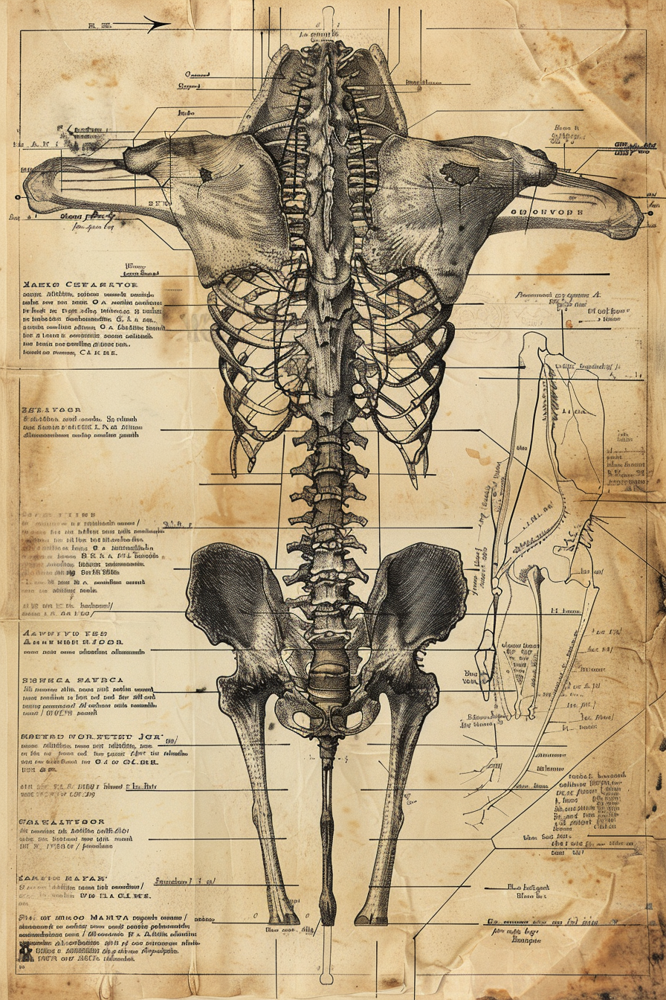
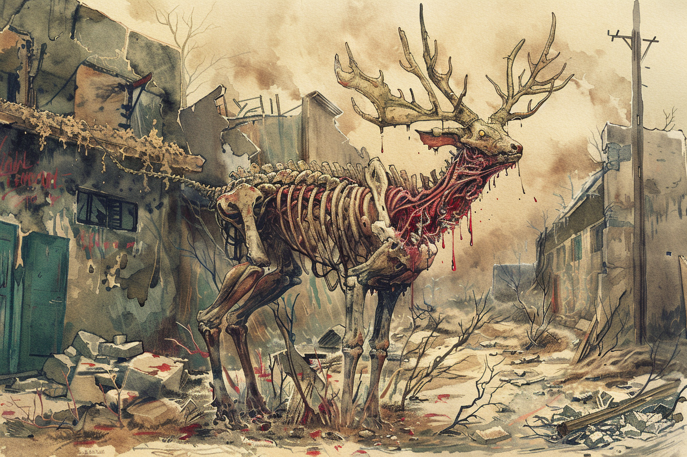
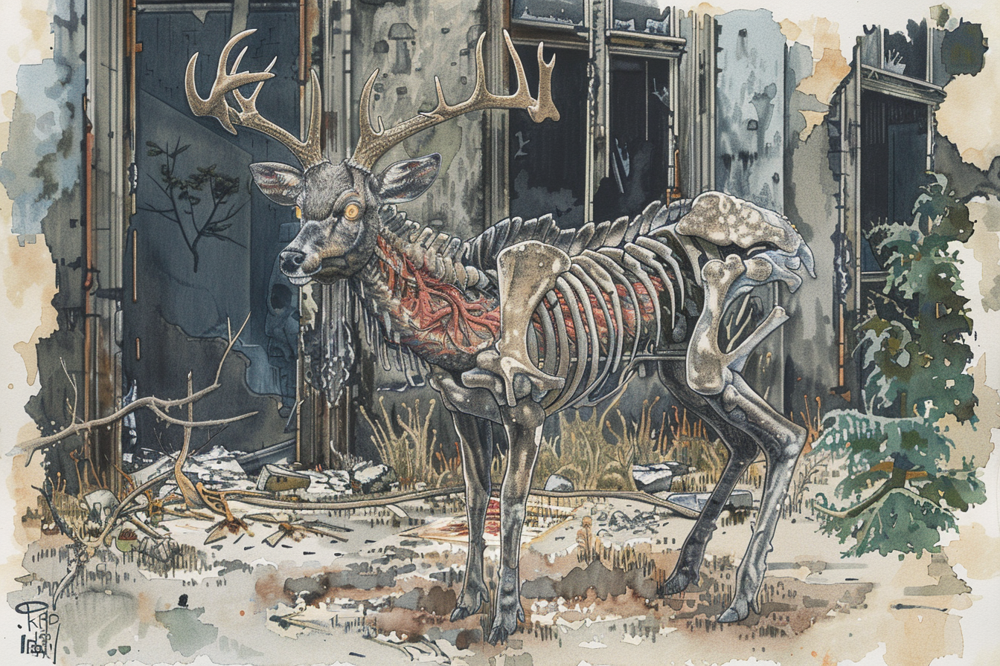
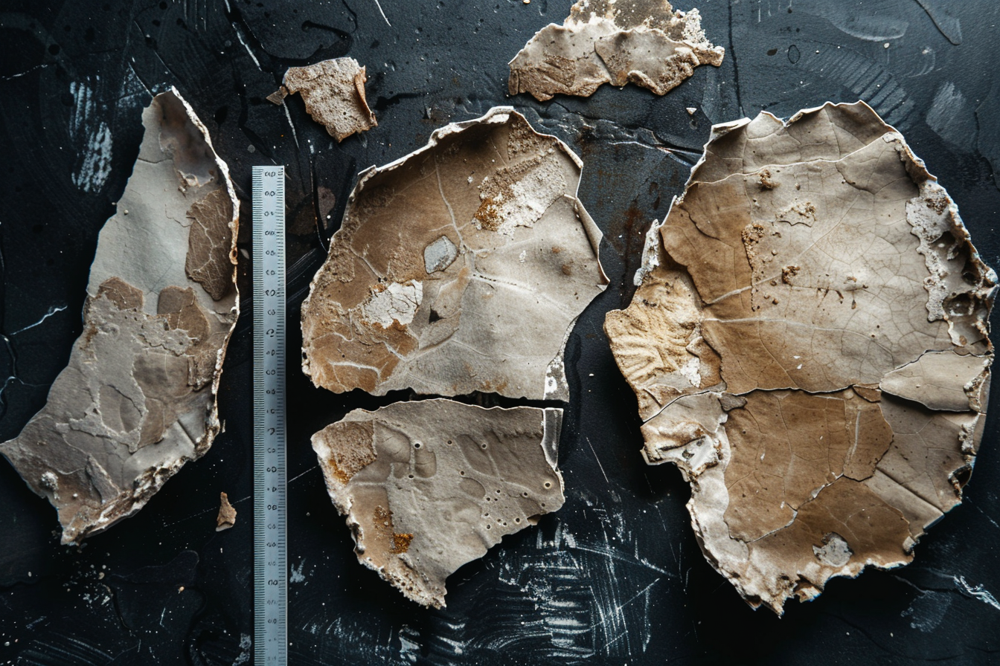
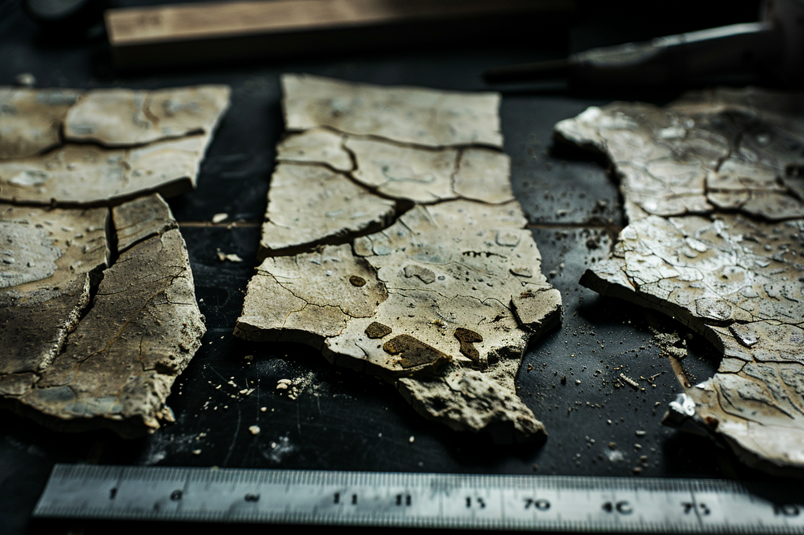

Ungulado de gran porte, comparable en masa a un caballo percherón adulto. La característica más distintiva es la piel: endurecida en placas calcáreas superpuestas de tono gris ceniza, visualmente indistinguibles del cascajo de construcción a distancia media. Las placas son tejido vivo con inervación activa — no son acumulación mineral pasiva sino una modificación dérmica que responde a estímulos táctiles. En individuos adultos las placas del lomo y flancos alcanzan entre 4 y 7 cm de grosor, con capacidad de absorción de impacto equivalente a mampostería de block sencillo.
Los ojos son de iris amarillo opaco con pupila vertical reducida. La visión diurna es deficiente — los individuos observados muestran respuesta lenta a estímulos visuales estáticos bajo luz directa. La visión crepuscular y nocturna parece compensar esta deficiencia, aunque no hay datos suficientes para cuantificarla. El olfato parece ser el sentido primario de orientación.
Las extremidades terminan en pezuñas endurecidas con depósitos minerales adicionales, produciendo un sonido característico sobre asfalto — rítmico, pesado, audible a más de cien metros en condiciones de silencio urbano.
Herbívoro estricto. Se alimenta principalmente de la flora mutada que coloniza grietas y márgenes urbanos — en particular la enredadera acelerada y gramíneas que crecen entre las juntas del asfalto deteriorado. Se han documentado también marcas de mordida en corteza de árboles supervivientes.
El patrón de pastoreo es territorial en ciclos de tres días: el individuo recorre el mismo sector antes de desplazarse al siguiente. Este comportamiento facilita la predicción de rutas pero también implica que el animal conoce bien su zona de operación.
Inofensivo en ausencia de amenaza percibida. Los individuos observados ignoran la presencia humana a distancias superiores a treinta metros, incluso cuando el observador está en movimiento. Sin embargo, cuando se siente acorralado o cuando algo se interpone entre el individuo y su ruta de escape, carga sin advertencia previa. El impacto de un ejemplar adulto en carrera puede derribar una pared de block estándar o volcar un vehículo compacto.
No hay registro de ataques iniciados sin factor de acorralamiento. La amenaza principal que representa esta especie no es la agresión activa sino el territorio que ocupa y la impredictibilidad de su respuesta ante sorpresas.
El primer avistamiento documentado corresponde a F-01, quien observó un individuo cruzando su calle a las 14:00 del día 1 y lo registró bajo el nombre provisional "Lanudo" — descartado posteriormente por inexacto. F-03 documentó un espécimen muerto en el km 91 de la carretera 45 con evidencia de herida letal por depredador de mayor talla, lo que constituye el primer registro indirecto de jerarquía depredatoria sobre esta especie.
La denominación Cervato de Concreto fue establecida por consenso del archivo a partir de las notas combinadas de F-01 y F-03. El nombre científico provisional Cervus lapidosus fue asignado por el equipo de análisis y no ha sido validado por ninguna institución académica activa.




